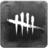
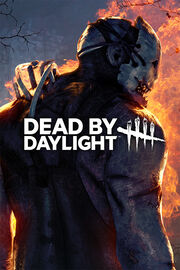

 Dead by Daylight
Detalles
|  | |
| Tiempo de juego | 7h 6m 0s |
| Última actividad | 24/8/2021 17:18:12 |
| Añadido | 16/3/2022 22:03:25 |
| Modificado | 17/3/2022 17:36:45 |
| Estado de finalización | Abandonado |
| Librería | Steam |
| Fuente | Steam |
| Plataforma | PC (Windows) |
| Fecha de lanzamiento | 14/6/2016 |
| Puntuación de la Comunidad | 81 |
| Puntuación de la Crítica | 67 |
| Puntuación de usuario | |
| Género | Action |
| Desarrollador | Behaviour Interactive Inc. |
| Editor | Behaviour Interactive Inc. |
| Característica | Achievements Cloud Saves Co-Op Cross-Platform Multiplayer Full Controller Support Multiplayer Online Co-Op Online Pvp Pvp Remote Play On Phone Remote Play On Tablet Remote Play On TV Trading Cards |
| Enlaces | Punto de encuentro Discusiones Guías Noticias Página de la tienda PCGamingWiki Logros |
| Tag | |
Descripción

Death Is Not an Escape.
Dead by Daylight is a multiplayer (4vs1) horror game where one player takes on the role of the savage Killer, and the other four players play as Survivors, trying to escape the Killer and avoid being caught, tortured and killed.
Survivors play in third-person and have the advantage of better situational awareness. The Killer plays in first-person and is more focused on their prey.
The Survivors' goal in each encounter is to escape the Killing Ground without getting caught by the Killer - something that sounds easier than it is, especially when the environment changes every time you play.
More information about the game is available at http://www.deadbydaylight.com
Key Features
• Survive Together… Or Not - Survivors can either cooperate with the others or be selfish. Your chance of survival will vary depending on whether you work together as a team or if you go at it alone. Will you be able to outwit the Killer and escape their Killing Ground?• Where Am I? - Each level is procedurally generated, so you’ll never know what to expect. Random spawn points mean you will never feel safe as the world and its danger change every time you play.
• A Feast for Killers - Dead by Daylight draws from all corners of the horror world. As a Killer you can play as anything from a powerful Slasher to terrifying paranormal entities. Familiarize yourself with your Killing Grounds and master each Killer’s unique power to be able to hunt, catch and sacrifice your victims.

• Deeper and Deeper - Each Killer and Survivor has their own deep progression system and plenty of unlockables that can be customized to fit your own personal strategy. Experience, skills and understanding of the environment are key to being able to hunt or outwit the Killer.
• Real People, Real Fear - The procedural levels and real human reactions to pure horror makes each game session an unexpected scenario. You will never be able to tell how it’s going to turn out. Ambience, music, and chilling environments combine into a terrifying experience. With enough time, you might even discover what’s hiding in the fog.
WARNING: PHOTOSENSITIVITY/EPILEPSY SEIZURES - READ THIS NOTICE BEFORE PLAYING
A very small percentage of people may experience epileptic seizures or blackouts when exposed to certain kinds of flashing lights or light patterns. These persons, or even people who have no history of seizures or epilepsy, may experience epileptic symptoms or seizures while playing video games. If you or any of your relatives has an epileptic condition or has had seizures of any kind, consult your physician before playing any video game.
IMMEDIATELY DISCONTINUE use and consult a physician if you or your child experience any of the following symptoms: dizziness, altered vision, eye or muscle twitching, involuntary movements, loss of awareness, disorientation, or convulsions. Parents should watch for or ask their children about the above symptoms.
You may reduce risk of photosensitive epileptic seizures by taking the following precautions: sit farther from the screen, use a smaller screen, play in a well-lit room, do not play when you are drowsy or fatigued.